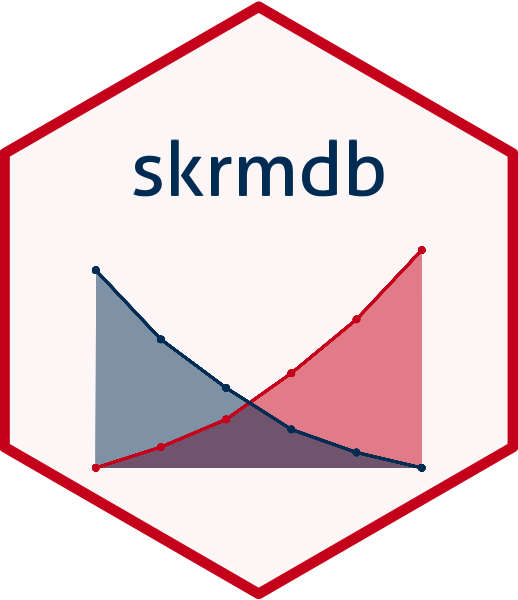

Changelog
Version 4.4
- Total rewrite of functions. Does not enforce that adata is sorted.
- Gives warnings
- Expanded function definitions used to set what is going on
- Warnings on possible problems with data.
- use of y, n, and x parameters deprecated.
Version 4.2.4
- SpearKarb, ReedMuench, and DragBehr will enforce that input data is sorted by x (either increasing or decreasing). No estimate will be calculated.
- SpearKarb, ReedMuench, and DragBehr will evaluate if input data y variable is not monotone and display results as a warning. The estimate will be calculated in the original order regardless of direction.
- For Y variables that are monotone, SpearKarb, ReedMuench, and DragBehr will evaluate whether input is monotone increasing or monotone decreasing and display results as a message. The estimate will be calculated in the original order regardless of direction.
- examples of unordered X variable, X variable direction, Y variable direction, Y variable not monotone added to SpearKarb, ReedMuench, and DragBehr help pages